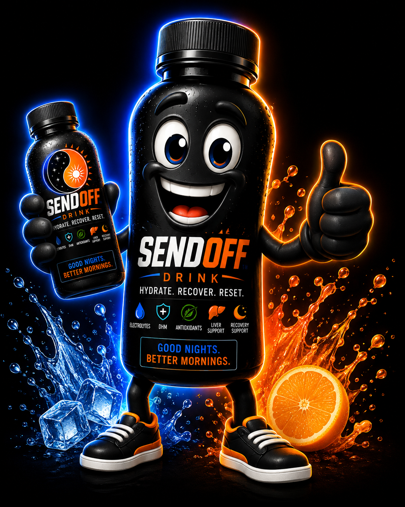

KEEP GOING
Still out. Still having fun. Add a hydration moment while the night is moving.
“We’re not done yet.”
DON'T JUST END THE NIGHT. SEND IT OFF.
SendOff is building a simple social ritual around something people already know they should do: hydrate while the night is still happening—not just when it is over.
PRELAUNCH · GOOD NIGHTS. BETTER MORNINGS.™

THE SENDOFF SYSTEM
We are not trying to lecture people about hydration. We are turning it into part of the night.
Still out. Still having fun. Add a hydration moment while the night is moving.
“We’re not done yet.”Before the next bar, concert set, afterparty or late-night stop—reset the rhythm.
“What’s next?”The signature moment. Before the ride home, finish the night with intention.
“You ready for your SendOff?”THE NIGHT IS ONLY HALF THE STORY
SendOff lives in the space between the ridiculous photo you laugh about later and the life you actually want to wake up for.
GOOD NIGHTS. BETTER MORNINGS.


FOR BARS · VENUES · RETAIL
The opportunity is bigger than a single closing-time purchase. SendOff is designed around three moments a bartender can naturally introduce during one guest journey.
WHO YOU'RE DEALING WITH
SendOff is led by Chuck Bell, a career salesperson, retailer and hospitality operator who built his reputation through relationships, follow-through and face-to-face selling. The launch strategy starts the same way: one bar, one bartender and one unforgettable customer experience at a time.
MEET CHUCK →BUILT TO SHOW UP


TAKE THE RITUAL WITH YOU
Singles, rounds, two-packs and displays all reinforce the same behavior: choose your SendOff moment and keep tomorrow in the plan.
GET IN EARLY
Consumers, bars, venues, retailers, distributors and event partners can connect directly with the founder while the launch program is being built.
charles@sendoffdrink.com